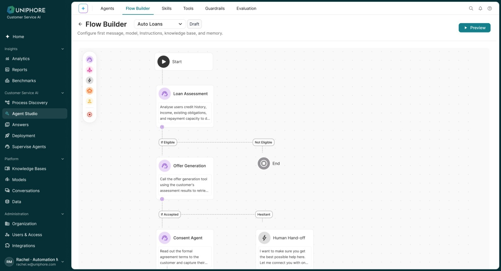

Designing beyond Figma
How I used Claude Code, our design system and GitHub to move from requirements to working product experiences.
While working on newer BAIS experiences such as AI Agents and Administration, our design process increasingly moved beyond static screens. Instead of designing the entire experience in Figma and handing it over, we started using AI-assisted coding as part of the design process itself.


